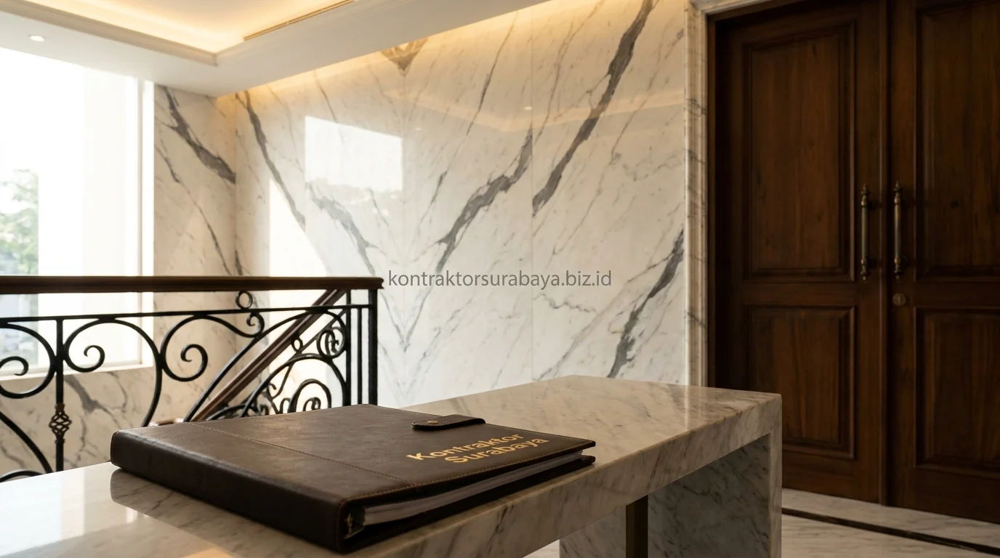

Kawasan hunian prestisius di Surabaya seperti Dharmahusada, Kertajaya Indah, CitraLand, hingga Pakuwon City kini banyak mengadopsi gaya arsitektur klasik modern (modern classic). Berbeda dengan gaya klasik Eropa masa lampau yang sarat akan ukiran gipsum rumit, gaya klasik modern menyajikan kemegahan melalui garis-garis yang lebih bersih, rapi, dan proporsional untuk gaya hidup kontemporer.
1. Ciri Fasad Klasik Modern pada Rumah Mewah
Pilar dengan proporsi seimbang, atap perisai bertingkat, kombinasi material premium, dan jendela besar simetris adalah empat ciri utama fasad klasik modern pada rumah mewah:
- Pilar dengan Proporsi Seimbang: Memberi kesan kokoh dan megah pada pintu masuk tanpa terlihat berat atau berlebihan.
- Atap Perisai Bertingkat: Menambah dimensi visual vertikal sekaligus menghadirkan kesan formal yang anggun.
- Kombinasi Material Premium: Penggabungan batu alam travertin, dinding bertekstur warna gading, dan aksen panel logam tembaga menonjolkan nuansa berkelas.
- Jendela Besar Berbingkai Tegas: Penempatan jendela kaca tinggi secara simetris menjaga keseimbangan visual fasad sekaligus memaksimalkan pencahayaan alami.
2. Material Premium yang Memperkuat Kesan Mewah
Marmer, kayu jati solid, granit impor, dan railing besi tempa artistik adalah empat material premium yang paling sering digunakan untuk memperkuat kesan mewah pada hunian kelas atas:
- Marmer Alam Impor: Digunakan pada lantai foyer, dinding aksen backdrop ruang tamu, dan meja island dapur bersih.
- Kayu Jati Solid: Diterapkan pada pintu utama setinggi 3 meter dan lantai parket kamar tidur utama untuk memberi kehangatan visual.
- Granit Alam Berkualitas: Sangat tahan terhadap cuaca panas terik Surabaya dan cocok diaplikasikan pada dinding fasad luar.
- Railing Besi Tempa Artistik: Memberikan sentuhan klasik yang anggun pada tangga utama melingkar maupun balkon lantai atas.

3. Bagaimana Proporsi dan Simetri Membentuk Kesan Prestisius?
Fasad dengan elemen yang seimbang di kedua sisi, mulai dari posisi bukaan jendela, teras masuk, hingga tinggi pilar, menciptakan kesan formal dan prestisius yang menjadi ciri khas gaya klasik modern.
Kesan mewah pada arsitektur klasik modern tidak selalu ditentukan oleh luas lahan, melainkan oleh ketepatan kalkulasi proporsi (Golden Ratio) antar elemen fasad yang direncanakan secara presisi sejak tahap gambar kerja DED.
"Kemewahan arsitektur sesungguhnya tidak terletak pada banyaknya ornamen, melainkan pada keanggunan proporsi, presisi pertemuan antar material, dan kenyamanan ruang bagi penghuninya."
4. Tata Ruang Rumah Mewah dengan Area Privat dan Area Tamu Terpisah
Area menerima tamu (foyer, ruang tamu formal, dan ruang makan utama) ditempatkan di bagian depan, sementara area privat keluarga (ruang keluarga, dapur bersih, dan kamar tidur) berada di bagian dalam atau lantai atas.
Pemisahan zonasi ini memungkinkan aktivitas keluarga sehari-hari tetap berlangsung intim dan tenang, sementara area formal selalu siap digunakan untuk menyambut tamu atau rekan bisnis tanpa mengganggu privasi penghuni rumah.
5. Elemen Lansekap yang Melengkapi Kesan Eksklusif
Kolam hias, taman formal, driveway lebar, dan pencahayaan taman adalah empat elemen lansekap yang paling sering melengkapi kesan eksklusif rumah mewah:
- Kolam Hias & Water Feature: Gemercik air di halaman samping menghadirkan ketenangan dan meredam hawa panas tropis Surabaya.
- Taman Formal Simetris: Tanaman topiary dan pohon pule yang ditata rapi memperkuat kemegahan arsitektur hunian.
- Driveway Bermotif Batu Alam: Jalur masuk kendaraan yang lapang memudahkan manuver kendaraan sekaligus memperluas pandangan fasad.
- Pencahayaan Arsitektural: Sorotan lampu warm white pada tekstur pilar menciptakan visual megah dan dramatis di malam hari.
6. Kesalahan yang Membuat Rumah Mewah Terlihat Berlebihan, Bukan Elegan
Terlalu banyak ornamen dekoratif, kombinasi material yang tidak selaras, proporsi pilar yang tidak seimbang, dan pemilihan warna yang terlalu kontras adalah empat kesalahan yang sering membuat rumah mewah kehilangan kesan elegannya:
- Terlalu Banyak Ornamen Gipsum: Menumpuk ukiran di setiap sudut justru membuat fasad terlihat berat dan cepat usang.
- Tabrakan Motif Material: Memadukan terlalu banyak jenis batu alam dan corak marmer yang tidak senada.
- Proporsi Pilar Tidak Seimbang: Diameter pilar yang terlalu gemuk atau kurus merusak estetika keseluruhan tampak depan.
- Warna Cat Terlalu Mencolok: Menghindari warna netral berkelas seperti krem hangat, warm grey, dan off-white.
Setiap proyek rumah mewah memiliki karakter dan preferensi klien yang unik, sehingga kombinasi elemen klasik modern perlu disesuaikan melalui konsultasi langsung dengan arsitek. Lihat referensi visual lebih lengkap pada galeri proyek kami, atau pelajari cakupan layanan pada halaman jasa arsitek Surabaya.